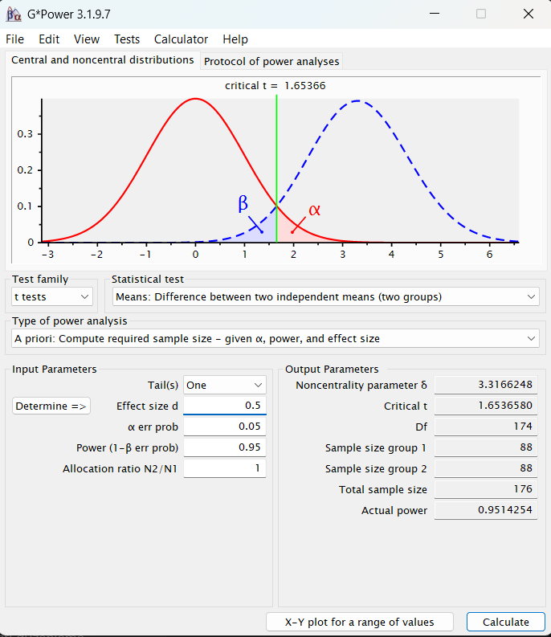

Hedef: G*Power 3.1.9.7 · t testi, iki bağımsız ortalama (ilaç ve plasebo). Tersine mühendislikle (REA & Ghidra) söküldü, temiz odada Python ile yeniden yazıldı, G*Power pencereleriyle kanıtlandı.
| Noncentrality (δ) | Kritik t | Serbestlik Derecesi (df) | Gerçekleşen Güç |
|---|---|---|---|
| 3.3166248 | 1.6536580 | 174 | 0.9514254 |
| Vektör ID | Mod | Tails | d | α | Hedef Güç | Oran | G*Power (N) | Bu Motor (N) | Fark | Durum |
|---|---|---|---|---|---|---|---|---|---|---|
| V01 (Açık Sözleşme) | a-priori | 1 | 0.50 | 0.05 | 0.95 | 1.0 | 176 | 176 | 0 | Birebir |
| V02 (Çift Kuyruk) | a-priori | 2 | 0.50 | 0.05 | 0.95 | 1.0 | 210 | 210 | 0 | Birebir |
| V09 (Dengesiz Oran 2:1) | a-priori | 2 | 0.50 | 0.05 | 0.80 | 2.0 | 144 | 144 | 0 | Birebir |
| V21 (Post-Hoc Güç) | post-hoc | 1 | 0.50 | 0.05 | — | 1.0 | %95.14 | %95.14 | 0 | Birebir |
CLI Çalıştırma: gpower-clone --test t2-indep --mode a-priori ...
MCP Sunucusu: python -m src.mcp_server (Araç: power_analysis)
Klinik Ajan: python -c "from src.agent import ClinicAgent; print(ClinicAgent().answer('...'))"

| Alan | G*Power | Bu Motor |
|---|---|---|
| Sample size group 1 (n1) | 88 | 88 |
| Sample size group 2 (n2) | 88 | 88 |
| Total sample size (N) | 176 | 176 |
| Degrees of freedom (df) | 174 | 174 |
| Noncentrality parameter (δ) | 3.3166248 | 3.3166248 |
| Critical t | 1.6536580 | 1.6536580 |
| Actual power | 0.9514254 | 0.9514254 |